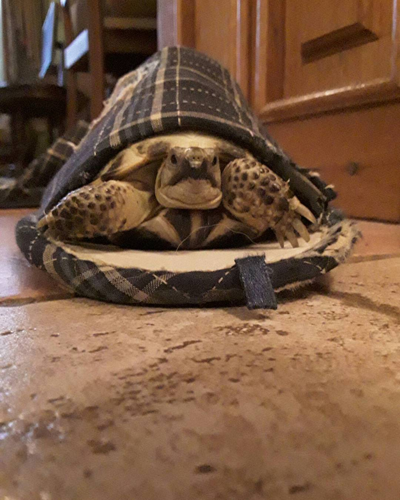

Жил в зоомагазине черепашонок. В один солнечный день пришел за ним человек и забрал к себе домой. Черепашонку дали имя - Камушек. Жил пожевал и горя не знал. Часто переезжал в разные квартиры со своим человеком. Пока однажды человек не постороил для него собственный дом. И с тех пор Камушек стал хозяином своей собственной квартирки (в отличии от своего человека ха-ха).
Какой же Камушек на самой деле? Это не просто маленькое, холоднокровное, зеленое создание. Которое хорошо ориентируется в пространстве. В нем еще таятся такие черты характера как: